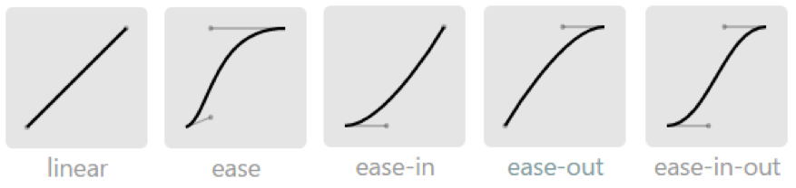

CSS3 transition
transition是过渡的意思，可想而知transition属性让元素的一个或一些属性值随着时间的推移从旧状态向新动态过渡。
1、transition的子属性
transition有一些子属性来定义元素属性的过渡细节。
transition-property属性指定应用了过渡的CSS属性，并不是所有属性都能过渡，在第二节中会详细介绍。除了指定单个属性，还可以设为all。
transition-duration属性指定了过渡过程的时长。
transition-timing-function属性描述如何计算在过渡过程中使用的中间值。它允许在其持续时间内改变速度。这些效应通常称为缓和函数，有linear，ease，ease-in，ease-out，ease-in-out，cubic-bezier(n,n,n,n)，steps。其实它们都是贝赛尔曲线。如下图所示。

看贝赛尔曲线就知道了，linear是匀速过渡，ease是先快再慢的节奏，ease-in是加速冲刺的节奏，ease-out是减速到停止的节奏，ease-in-out是先加速后减速的节奏。
transition-delay属性定义过渡经过一段延迟时间后开始。
对于缩写的transition可以包含上面的四项：
<single-transition> = [ none | <single-transition-property> ] || <time> || <single-transition-timing-function> || <time>
||代表各部分至少出现一个，可以不按顺序；[ ]强调优先级，即transition-property要放在第一位。有两个time第一个设置的time代表transition-duration，第二个设置的time代表transition-delay。
2、可以transition的属性
在transition中，transition-property指定CSS过渡属性。并不是所有属性都能过渡的，只有能数字量化的CSS属性才能过渡。哪些属于能数字量化的CSS属性呢？例如：
颜色系：color，background-color，border-color，outline-color等
数字系：实在太多了，如width，height，top，right，bottom，left，zoom，opacity，line-height，background-position，word-spacing，font-weight，vertical-align，outline-outset，z-index等。
01系：如visibility（0表示隐藏，1表示显示）。
W3C上有可过渡属性一览表Properties from CSS。通常只要能设数字（包括百分比）的属性都能过渡。
3、transition触发
那么transition是何时触发的？transition用于定义一个元素在两个状态之间的过渡：css伪类比如:hover、:active可以标识两个状态，在元素上定义transition属性和transition-property指定的属性，然后在元素:hover上改变transition-property指定属性的状态;或者动态的使用js来改变该元素应用了过渡的属性；还有例如@media媒体查询，根据设备大小，横屏竖屏切换时触发。
比如mdn上的一个例子，使用:hover来触发过渡：
1 | <body> |
1 | .box { |
或者改成使用js改变元素属性，html代码和上面一样。
1 | .box { |
1 | (function(){ |
4、transitionend事件
当过渡结束会触发transitionend事件。但如果一个transition在完成之前就被移除（定义transition属性的元素被删除，比如transition的过渡属性display从block到none），那么transitionend事件不会被触发。
比如对上面第二个例子进行改进，监听transitionend事件：
1 | (function(){ |
会发现，对display属性进行由block到none的过渡就不会触发transitionend事件。
当删除display过渡属性，保留背景颜色、宽、高和transform这四个过渡属性，就会触发transitionend事件四次。
如果过渡属性指定的是padding，即同时过渡padding-left\top\right\bottom这四个属性，transitionend事件会触发四次。因此例如padding，margin，border之类的属性，用transitionend事件会有多次捕获的情况发生。
5、auto过渡
通常我们属性过渡时，都是定值到定值的过渡，例如width:100px过渡到200px。但要过渡到width:auto就不行了。就算你指定transition:
width 1s;会发现不会有1秒的过渡效果，而是会瞬间完成过渡。
可以将width瞬间置为auto，使用window.getComputedStyle()获得当前width的数值，然后将width置回100px。再用事件触发改变width。
可以看到过渡过程，代码如下：
1 | (function(){ |